| 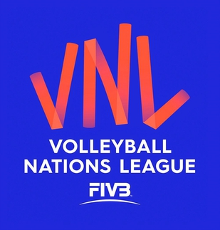 | Premier Starptautiskais volejbola pasākums
|
Atklāts 2018. gadā
| 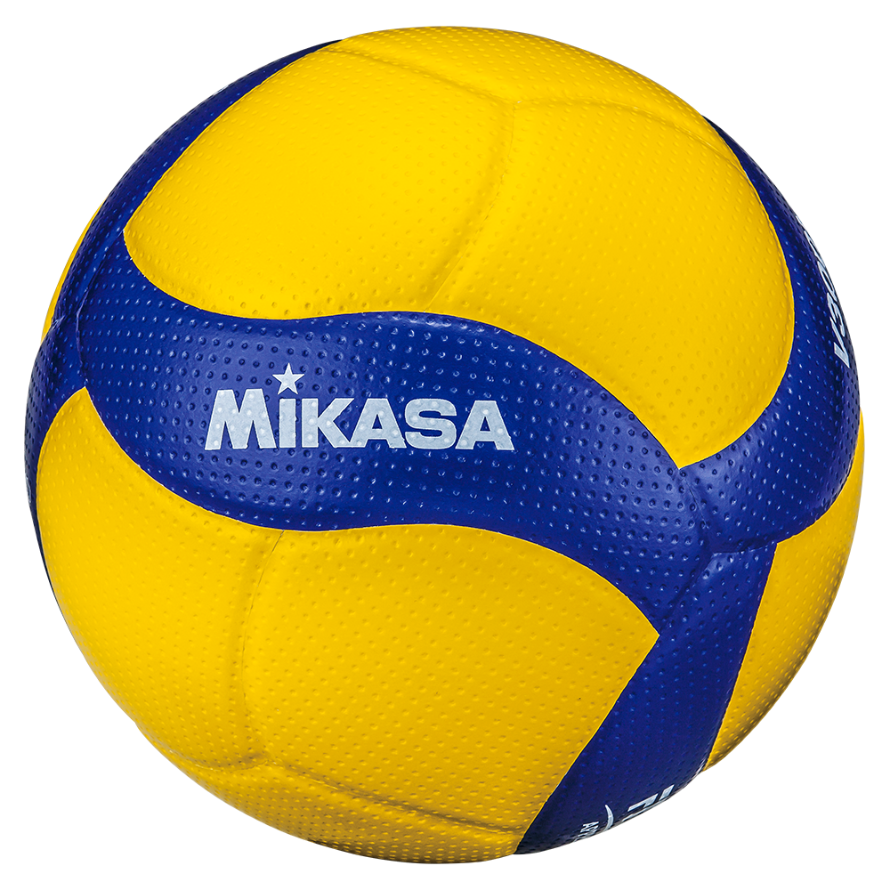 |
| 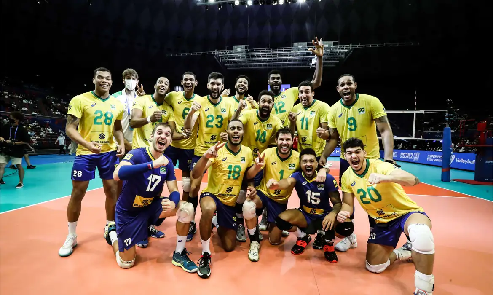 | Labāko komandu dalība
|
Apļa spēles formāts
| 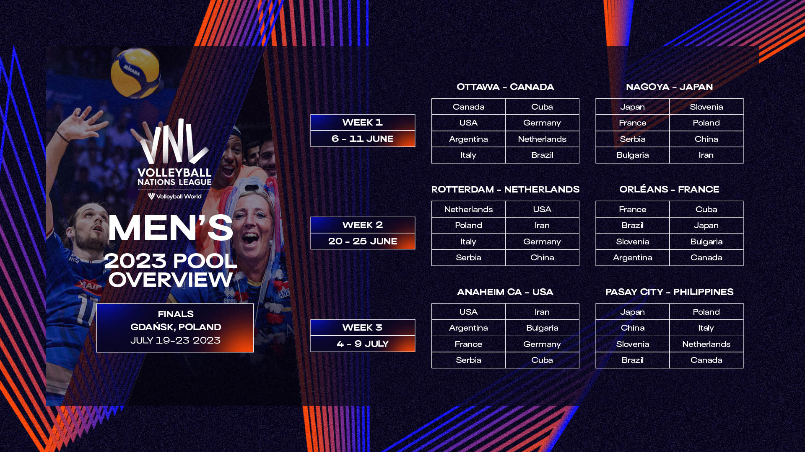 |
| 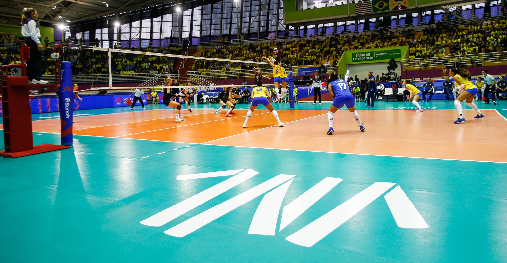 | Premier Starptautiskais volejbola pasākums
|
Uzņēmējpilsētas
| 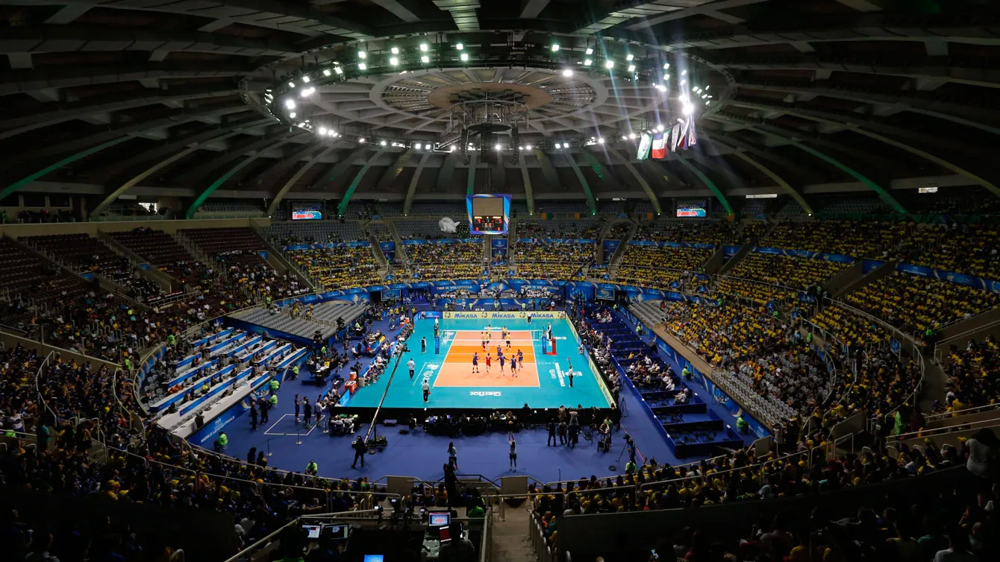 |
| 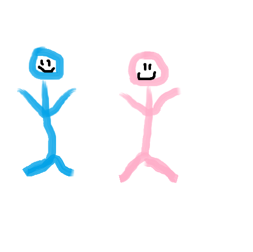 | Dzimumu līdztiesība
|
Augstu likmju sacensības
| 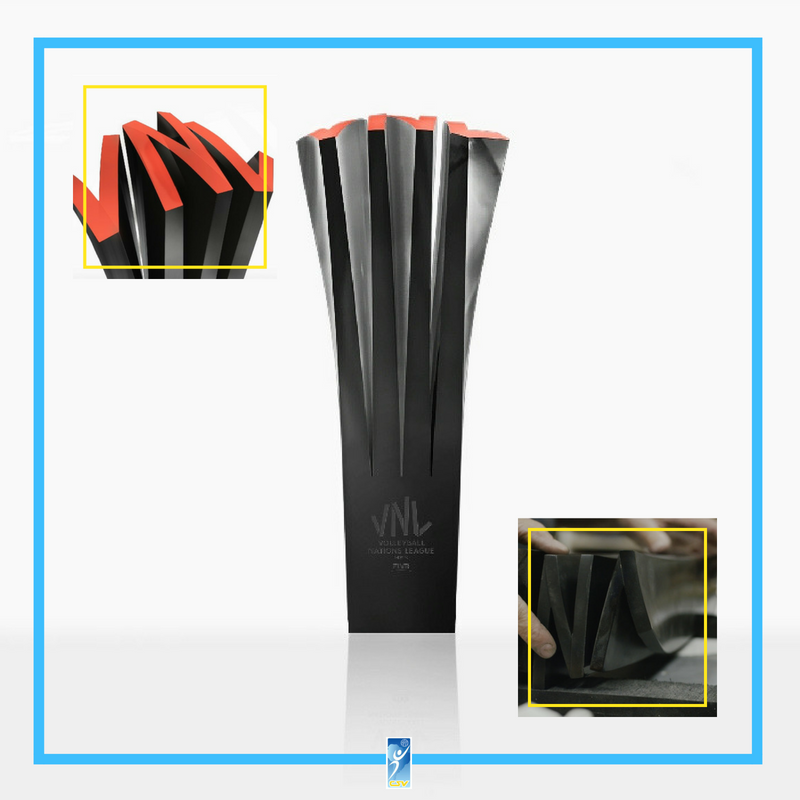 |
| 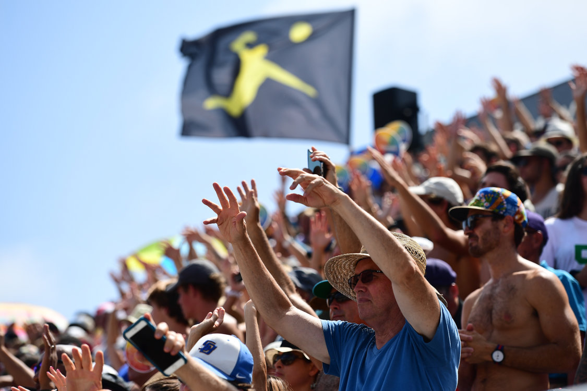 | Aizraujoša atmosfēra
|
Apraides pārklājums
| 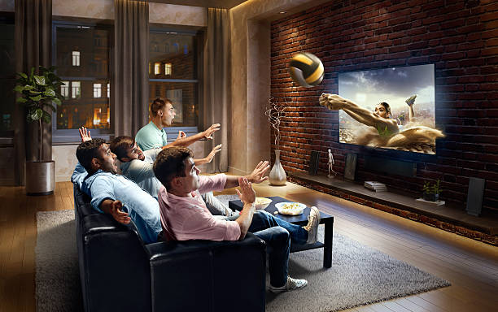 |
| 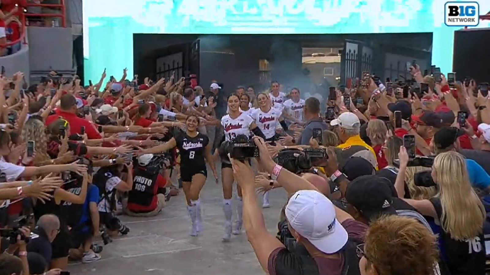 | Sabiedrības iesaistīšanās
|
| VNL oficiālā mājas lapa |